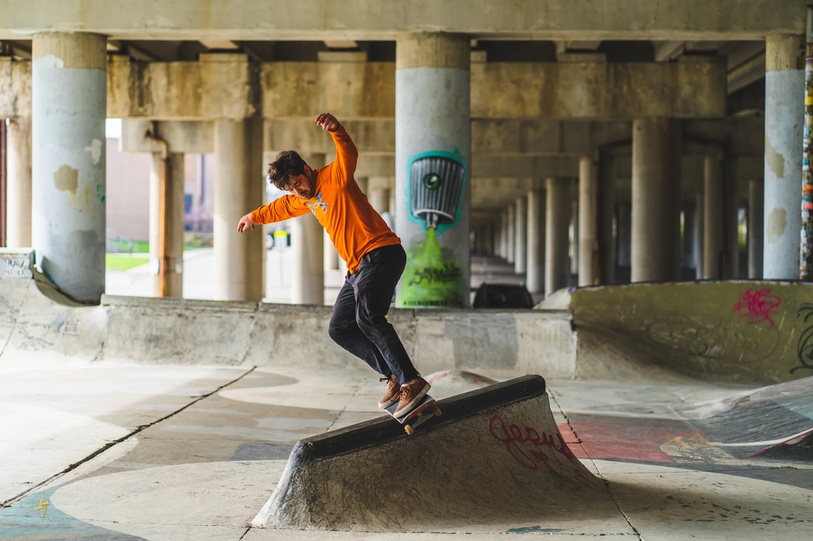

Make the brand feel consistent before anyone reads the caption.
Lifestyle and campaign-ready photography for people and independent brands that need a recognizable visual direction, not a folder of unrelated good photos.
Start with what the content needs to do.
A brand session can be shaped around a campaign, social content, a launch, a person, a product-adjacent story or a consistent library for future posts.
Direction
References, styling and intended use can guide the session before the first frame.
Consistency
Light, framing and color are treated as one visual set rather than disconnected shots.
Use-aware output
The scope starts with where the imagery is going so the shoot can be planned around the actual need.

Send the campaign, page or reference world.
Tell me what you are promoting, who is involved and what visual references already feel right. That gives the quote and session a real direction.
Pricing: Custom quote. Delivery timing and final scope are confirmed around the project.
Start Brand RequestPlan for use, not just aesthetics.
Can I send a moodboard or existing campaign?
Yes. Reference links are built directly into the booking form and are useful for matching the intended visual world.
Do you list fixed brand packages?
No fixed rate is invented on the site because coverage, locations and intended output vary. The booking request gathers enough context for a useful quote.
Can brand work include portraits?
Yes. Brand and lifestyle work can include people and portrait-driven frames when that matches the project.
Give the content one visual language.
Send the project, reference links and what the photos need to accomplish.
Book Brand Photography